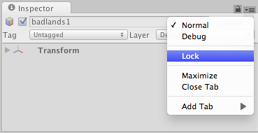

Inspector Options
The Inspector Lock and the Inspector Debug Mode are two useful options that can help you in your workflow.
Lock
The Lock lets you maintain focus on a specific GameObject in the Inspector while selecting other GameObjects. To toggle the lock of an Inspector click on the lock/unlock () icon above the Inspector or open the tab menu and select .

Locking the Inspector from the tab menu.
Locking the Inspector from the tab menu.
Note that you can have more than one Inspector open, and that you can for example lock one of them to a specific GameObject while keeping the other one unlocked to show whichever GameObject is selected.
Debug
The Debug Mode lets you inspect private variables of components in the Inspector, which are normally not shown. To change to Debug Mode, open the tab menu and select .
In Debug Mode, all components are shown using a default interface, rather than the custom interfaces that some components use in the Normal Mode. For example, the Transform component will in Debug Mode show the raw Quaternion values of the rotation rather than the Euler angles shown in the Normal Mode. You can also use the Debug Mode to inspect the values of private variables in your own script components.

Debug Mode in the Inspector lets you inspect private variables in your scripts and in other components.
The Debug mode is per Inspector and you can have one Inspector in Debug Mode while another one is not.
Page last updated: 2010-09-09